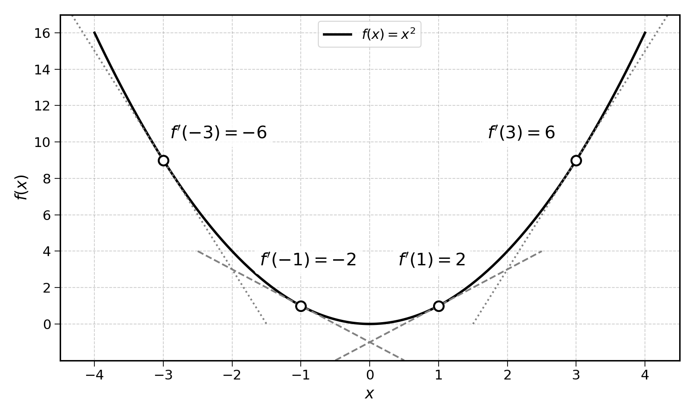
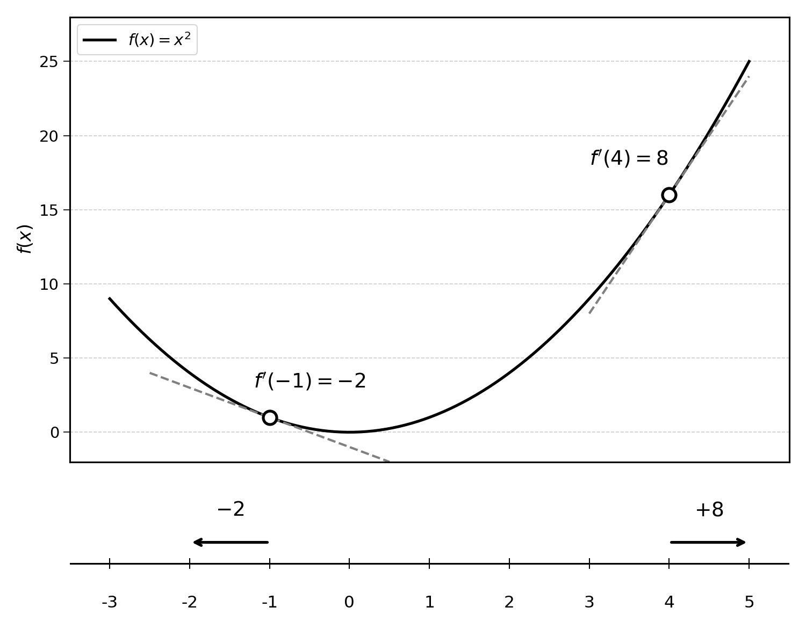
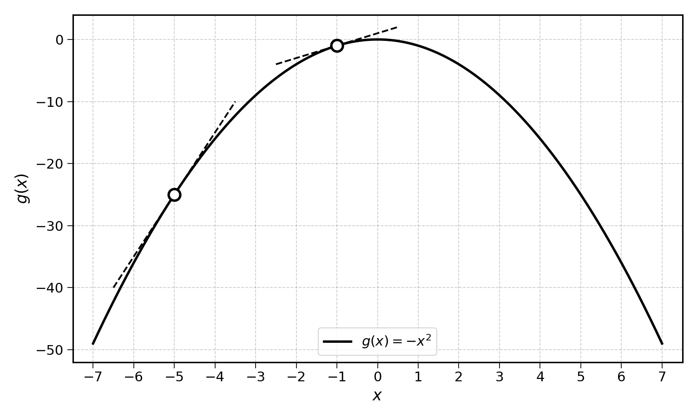
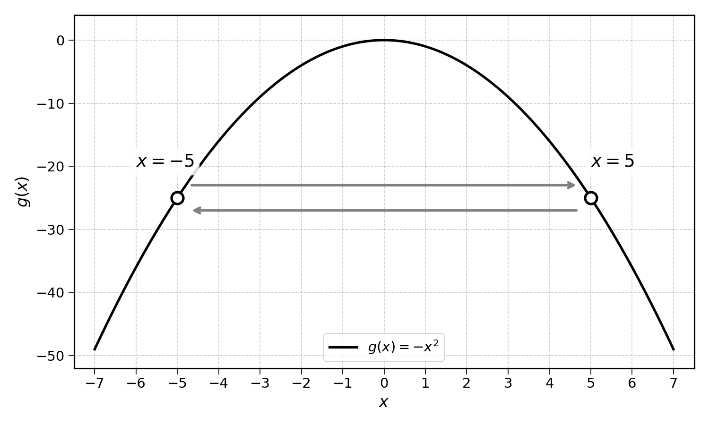
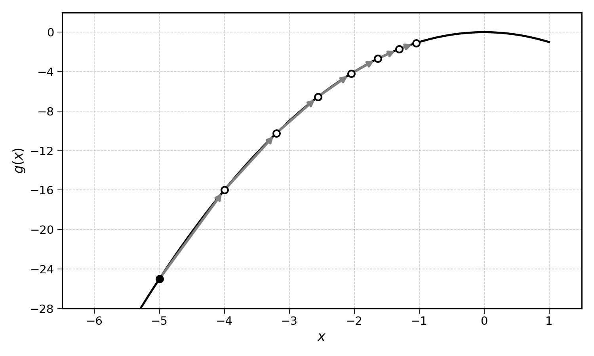
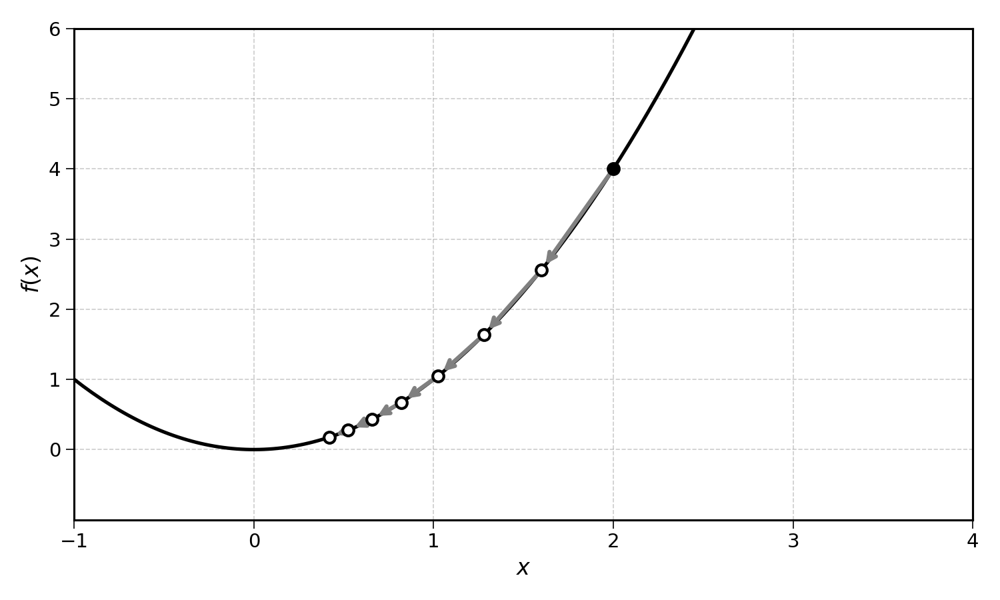
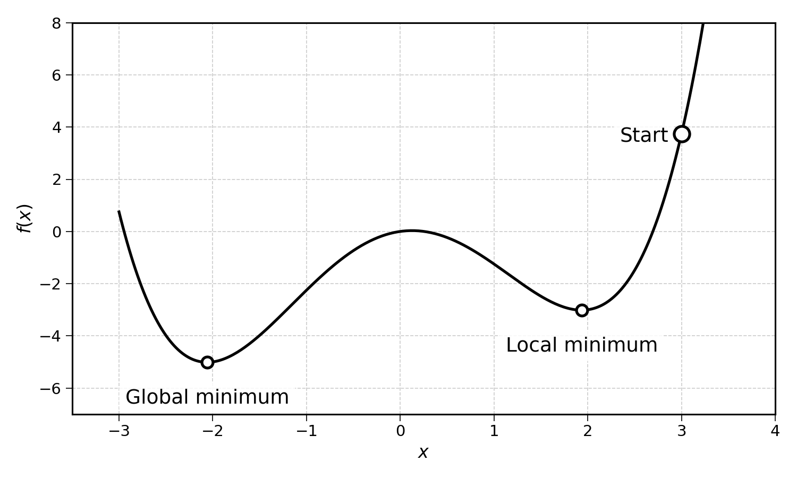
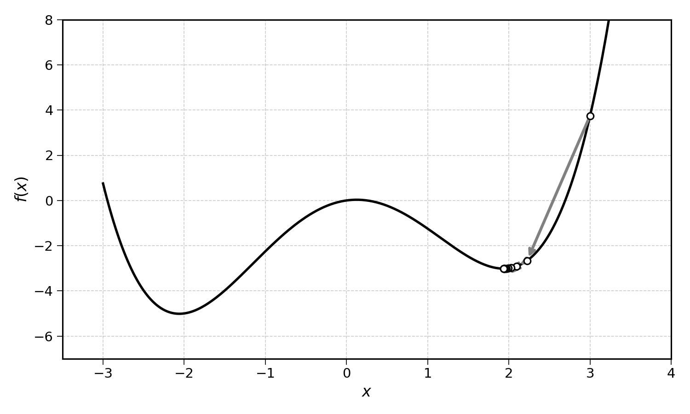

9 Minimising a Function with Derivatives
Well done for making it through the derivatives chapter. A derivative of a function is its rate of change at a single point. Now, how can we use these derivatives to find a function’s minimum?
The previous chapter already hinted at a solution. Given the function:
\[ f(x) = x^2 \]
We know that \(f'(x) = 2x\).

Exercise 9.1 Calculate \(f'(1)\) and \(f'(-1)\).
9.1 Maximising a Function
If we were looking for a maximum, we should always be following the direction of the derivative. But what does “following the direction” mean?
Looking at \(f(x) = x^2\), we have \(f'(x) = 2x\), \(f'(1) = 2\), and \(f'(-1) = -2\). If we are at the point \(f(1)\) and want to go toward the maximum, we would need to increase the value of \(x\), going in the direction of \(2\). If we are at the point \(f(-1)\) and want to go toward the maximum, we would need to decrease the value of \(x\), going in the direction of \(-2\).
Numbers can also be interpreted as directions along the number line:

Following the derivatives will lead us in the direction of steepest increase. For instance, the derivative of \(f(x) = x^2\) at \(4\), noted \(f'(4)\), is \(8\). This means that at the point \(x = 4\), \(f(x)\) will increase sharply as \(x\) increases. On the other hand, \(f'(-1) = -2\). This means at \(x = -1\), \(f(x)\) will decrease as \(x\) increases.
Now consider the function \(g(x) = -x^2\). This function has a clear maximum:

What is the derivative of this function?
\[ g(x) = (-1) \times x^2 \]
We know that the derivative of \(x^2\) with regards to \(x\) is \(2x\). Now what about the derivative of \(-1 \times x^2\)? As \(-1\) is a constant, the derivative is:
\[ g'(x) = (-1) \times 2x = -2x \]
Let’s try to maximise this function with derivatives. Starting at the point \(x = -5\), compute the derivative of \(g\) at \(x = -5\). We get:
\[ g'(-5) = -2 \times (-5) = 10 \]
This tells us that at \(x = -5\), \(g(x)\) will increase rapidly as \(x\) increases. We know that we should take a large step in the positive direction.
Let’s try this again with \(x = -1\), compute \(g'(-1)\):
\[ g'(-1) = -2 \times (-1) = 2 \]
At \(x = -1\), \(g\) will increase moderately as \(x\) increases. To find the maximum, we still need to increase the value of \(x\), but not by much.
Continuing with \(x = -0.5\), compute \(g'(-0.5)\):
\[ g'(-0.5) = -2 \times (-0.5) = 1 \]
The value of \(g(x)\) keeps increasing, but very little. We are getting closer, and I am sure that you can tell where this is going. By the time we arrive at \(x = 0\), we find \(g'(0) = 0\). This means that the value of \(g\) does not increase anymore. We have found a maximum!
9.2 Moving Step by Step
In the example above, we only moved by a small step in the direction of the derivative. At \(x = -5\), the derivative \(g'(x)\) was \(10\). Adding the full value of the derivative to \(x\), we would have passed the maximum and arrived at \(x = 5\). At \(x = 5\), we have \(g'(5) = -10\). This would tell us that to reach the maximum, we would need to reduce the value of \(x\). If we do this by the full value of the derivative, we would arrive back at \(x = -5\). There is no end to this loop.

This absurd example demonstrates the need to update the value of \(x\) in small steps. The size of these steps is defined by a parameter called the learning rate, a decimal number between 0 and 1 (e.g., 0.1). At each iteration, we update \(x\) as follows:
\[ x_{t+1} = x_t + \text{learning rate} \times g'(x_t) \]
We will use a learning rate of \(0.1\) for this example.
Going back to the example above, at \(x_0 = -5\), the derivative \(g'(-5) = 10\). This means that we should increase the value of \(x\) to find the maximum. We then update \(x\) with the formula:
\[ x_1 = x_0 + \text{learning rate} \times g'(x_0) = -5 + 0.1 \times 10 = -4 \]
We could then continue this process:
\[\begin{aligned} x_2 &= x_1 + 0.1 \times g'(x_1) = -4 + 0.1 \times 8 = -3.2 \\ x_3 &= x_2 + 0.1 \times g'(x_2) = -3.2 + 0.1 \times 6.4 = -2.6 \\ x_4 &= x_3 + 0.1 \times g'(x_3) = -2.6 + 0.1 \times 5.2 = -2.1 \\ x_5 &= x_4 + 0.1 \times g'(x_4) = -2.1 + 0.1 \times 4.2 = -1.7 \\ x_6 &= x_5 + 0.1 \times g'(x_5) = -1.7 + 0.1 \times 3.4 = -1.4 \\ x_7 &= x_6 + 0.1 \times g'(x_6) = -1.4 + 0.1 \times 2.8 = -1.1 \end{aligned}\]
As you can see, the value of \(x\) slowly converges to \(0\), the maximum of \(g(x) = -x^2\).

9.3 Gradient Ascent
The above process is an application of an optimisation method called gradient ascent. If you have already heard the term “gradient descent”, do not worry, we are getting there.
Optimisation is the discipline of maximising or minimising an objective function under a given set of constraints.
A traveller would optimise their suitcase by packing the items that give them the maximum satisfaction under the size and weight constraint of the bag (it must close!). This specific problem is known as the knapsack problem.
To maximise a function \(g(x) = -x^2\) with gradient ascent, follow the steps below:
- Start with a random guess: e.g., \(x_0 = 2\)
- Compute the derivative of the function at this point: \(g'(2)\)
- Update the value of \(x\) by a small step in the direction of \(g'(x)\): \(x_{t+1} = x_t + \text{learning rate} \times g'(x_t)\)
- Continue until the algorithm converges and there are no more changes to \(x\): \(x_{t+1} \approx x_t\)
These steps should sound familiar. They formalise the gradient ascent process we worked through in the previous section.
Exercise 9.2 Maximise the function \(f(x) = -3x^2 + x - 2\) using gradient ascent.
- Compute the derivative \(f'(x)\).
- Starting from \(x_0 = 3\), with a learning rate of \(0.1\), compute \(x_1\) through \(x_5\).
- What value does \(x\) seem to be converging to?
Hint: the derivative of \(-3x^2 + x - 2\) is \(-6x + 1\).
9.4 Gradient Descent
Some of you may have heard of gradient descent before. This is the algorithm used to train neural networks and large language models. Luckily, gradient descent is the mirror image of gradient ascent.
By convention, the field of optimisation is concerned with minimising functions. Note that maximising and minimising a function are equivalent: if you want to maximise \(f(x)\), you could use a minimisation algorithm to minimise \(-f(x)\). The value of \(x\) that minimises \(-f(x)\) will also maximise \(f(x)\).
This convention is useful to avoid having to constantly mention “maximise or minimise”. Historically, the main purpose of optimisation was to minimise a loss or cost function, explaining why minimisation became the default.
Remember that the derivative of a function points in the direction of greatest ascent. This means that to find the maximum of a function, you should follow the direction of the derivative.
How would you use derivatives to find the minimum? Well, you could just go the other way. Looking at the chart above, to find the minimum of the function, at \(x = -1\), you would need a minor increase of the value of \(x\). At \(x = 4\), you would need a significant decrease of the value of \(x\).
Putting this together as the gradient descent algorithm to minimise the function \(f(x) = x^2\):
- Start with a random guess: e.g., \(x_0 = 2\)
- Compute the derivative of the function at this point: \(f'(2)\)
- Update the value of \(x\) by a small step opposite to \(f'(x)\): \(x_{t+1} = x_t - \text{learning rate} \times f'(x_t)\)
- Continue until the algorithm converges and there are no more changes to \(x\): \(x_{t+1} \approx x_t\)
This looks very similar to gradient ascent, with one key difference at step 3. Instead of adding the derivative to \(x\) (i.e., following), the gradient descent algorithm subtracts it (i.e., goes the other way).
Let’s try this algorithm with an example. Minimise the function \(f(x) = x^2\), starting at \(x_0 = 2\) with a learning rate of \(0.1\).
\[\begin{aligned} x_1 &= x_0 - \text{learning rate} \times f'(x_0) = 2 - 0.1 \times 4 = 1.6 \\ x_2 &= x_1 - \text{learning rate} \times f'(x_1) = 1.6 - 0.1 \times 3.2 = 1.3 \\ x_3 &= x_2 - \text{learning rate} \times f'(x_2) = 1.3 - 0.1 \times 2.6 = 1.0 \\ x_4 &= x_3 - \text{learning rate} \times f'(x_3) = 1.0 - 0.1 \times 2.0 = 0.8 \\ x_5 &= x_4 - \text{learning rate} \times f'(x_4) = 0.8 - 0.1 \times 1.6 = 0.6 \\ x_6 &= x_5 - \text{learning rate} \times f'(x_5) = 0.6 - 0.1 \times 1.2 = 0.5 \\ x_7 &= x_6 - \text{learning rate} \times f'(x_6) = 0.5 - 0.1 \times 1.0 = 0.4 \end{aligned}\]

As you can see, the value of \(x\) slowly converges to the minimum of the function at \(x = 0\). Interestingly, when the derivative \(f'(x)\) is large, the gradient descent algorithm takes a bigger step. When the derivative is small (close to the minimum), the steps get smaller.
Exercise 9.3 Minimise the function \(f(x) = 3x^2 + x - 2\) using gradient descent.
- Compute the derivative \(f'(x)\).
- Starting from \(x_0 = 3\), with a learning rate of \(0.1\), compute \(x_1\) through \(x_5\).
- What value does \(x\) seem to be converging to?
Hint: the derivative of \(3x^2 + x - 2\) is \(6x + 1\).
We can now maximise or minimise any function with gradient ascent and descent! Or can we? Can you think of a case in which such an algorithm would fail to find the minimum of a function?
9.5 What About Local Minima?
Look at this function and starting point:

Where would the gradient descent algorithm end up? It would most likely get stuck in the local minimum.

Generally, maxima and minima are always defined over an interval. Using the example above, a point can be the minimum of the function over a limited interval, yet not be the global minimum. The global minimum is the minimum of the function over its entire domain (i.e., all of its possible input values).
If the function we try to minimise has one or more local minima, gradient descent may fail to find the global minimum. This is good to know, but will not matter for now. Luckily, the functions we need to minimise to build linear regressions are all convex, meaning they have a single minimum. On that note, let’s get back to linear regression.
9.6 Final Thoughts
This chapter introduced gradient ascent and descent. It relies on derivatives to find the minimum or maximum of a function.
- Gradient ascent follows the derivative to find a maximum: \(x_{t+1} = x_t + \text{learning rate} \times f'(x_t)\)
- Gradient descent goes against the derivative to find a minimum: \(x_{t+1} = x_t - \text{learning rate} \times f'(x_t)\)
The learning rate controls the size of each step, preventing the algorithm from overshooting the optimum. With a small enough learning rate, both algorithms will converge to a local optimum.
So far, we have only optimised functions with a single input \(x\). The next chapters will show how to fit a linear regression by minimising its error using gradient descent.
9.7 Solutions
Solution 9.1. Exercise 9.1
\[ f'(x) = 2x \]
\[ f'(1) = 2 \times 1 = 2 \]
\[ f'(-1) = 2 \times (-1) = -2 \]
At \(x = 1\), the function is increasing. At \(x = -1\), the function is decreasing. Both derivatives point in the direction of steepest ascent.
Solution 9.2. Exercise 9.2
- The derivative of \(f(x) = -3x^2 + x - 2\) is:
\[ f'(x) = -6x + 1 \]
- Starting from \(x_0 = 3\) with learning rate \(0.1\):
\[\begin{aligned} x_1 &= 3 + 0.1 \times (-6 \times 3 + 1) = 3 + 0.1 \times (-17) = 1.3 \\ x_2 &= 1.3 + 0.1 \times (-6 \times 1.3 + 1) = 1.3 + 0.1 \times (-6.8) = 0.6 \\ x_3 &= 0.6 + 0.1 \times (-6 \times 0.6 + 1) = 0.6 + 0.1 \times (-2.6) = 0.3 \\ x_4 &= 0.3 + 0.1 \times (-6 \times 0.3 + 1) = 0.3 + 0.1 \times (-0.8) = 0.2 \\ x_5 &= 0.2 + 0.1 \times (-6 \times 0.2 + 1) = 0.2 + 0.1 \times (-0.2) = 0.2 \end{aligned}\]
- The value of \(x\) seems to converge towards \(\frac{1}{6} \approx 0.2\). This makes sense: the maximum occurs where \(f'(x) = 0\), i.e., \(-6x + 1 = 0\), giving \(x = \frac{1}{6}\).
Solution 9.3. Exercise 9.3
- The derivative of \(f(x) = 3x^2 + x - 2\) is:
\[ f'(x) = 6x + 1 \]
- Starting from \(x_0 = 3\) with learning rate \(0.1\):
\[\begin{aligned} x_1 &= 3 - 0.1 \times (6 \times 3 + 1) = 3 - 0.1 \times 19 = 1.1 \\ x_2 &= 1.1 - 0.1 \times (6 \times 1.1 + 1) = 1.1 - 0.1 \times 7.6 = 0.3 \\ x_3 &= 0.3 - 0.1 \times (6 \times 0.3 + 1) = 0.3 - 0.1 \times 2.8 = 0.0 \\ x_4 &= 0.0 - 0.1 \times (6 \times 0.0 + 1) = 0.0 - 0.1 \times 1.0 = -0.1 \\ x_5 &= -0.1 - 0.1 \times (6 \times (-0.1) + 1) = -0.1 - 0.1 \times 0.4 = -0.1 \end{aligned}\]
- The value of \(x\) seems to converge towards \(-\frac{1}{6} \approx -0.2\). This is where \(f'(x) = 0\): \(6x + 1 = 0\), giving \(x = -\frac{1}{6}\).